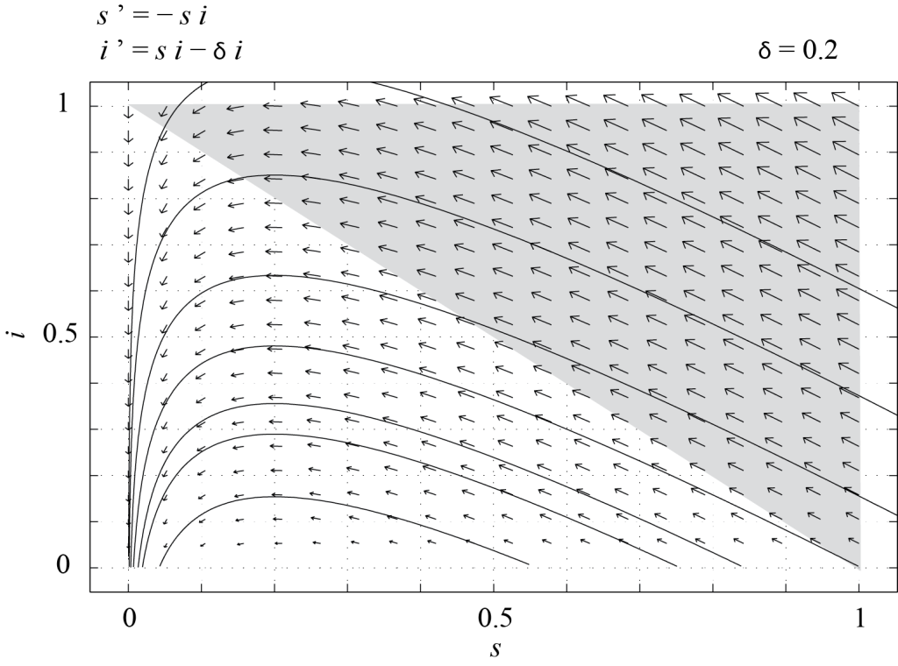
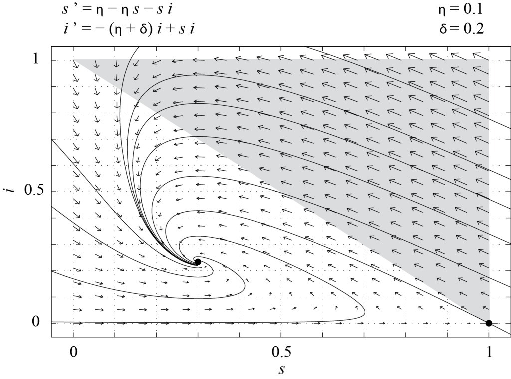

$latex \left\{\begin{align*} \displaystyle \frac{d X}{d t} & =\lambda - \delta X - b V X, \\ \displaystyle \frac{d Y}{d t} & = b V X - a Y,\\ \displaystyle \frac{d V}{d t} & = k Y - \kappa V, \end{align*}\right. \qquad (7.1)$
Model ini memiliki enam parameter dan empat variabel. Kita dapat menskalakan ulang waktu dan $latex V$, tetapi sebaiknya tidak menskalakan $latex X$ dan $latex Y$ secara terpisah karena keduanya menghitung sel dan suku $latex b V X$ memindahkan sel dari kompartemen $latex X$ ke kompartemen $latex Y$. Karena itu, kita dapat mereduksi Persamaan (7.1) menjadi model dengan tiga parameter. Secara lebih tepat, misalkan$latex \tau = \delta t, \qquad \displaystyle x = \frac{k b}{\delta^2} X, \qquad y = \frac{k b}{\delta^2} Y, \qquad v = \frac{b}{\delta} V.$
Dengan demikian, bentuk terskala Persamaan (7.1) adalah$latex \left\{\begin{align*} \displaystyle \frac{d x}{d \tau} & = \zeta - x - v\, x,\\ \displaystyle \frac{d y}{d \tau} & = v\, x - \eta\, y,\\ \displaystyle \frac{d v}{d \tau} & = y - \mu\, v, \end{align*}\right. \qquad (7.2)$
dengan $latex \zeta = \displaystyle \frac{\lambda k b}{\delta^3},$ $latex \eta = \displaystyle \frac{a}{\delta},$ dan $latex \mu = \displaystyle \frac{\kappa}{\delta}$ sebagai parameter tak berdimensi. Kita menskalakan waktu berdasarkan laju kematian sel yang tidak terinfeksi. Sebagai alternatif, kita dapat menskalakan waktu berdasarkan laju produksi sel yang tidak terinfeksi oleh tubuh, yaitu dengan mendefinisikan $latex \tau = \lambda t / X_0$, dengan $latex X_0 = \delta^2 / (k b)$. Kita juga dapat menggunakan gabungan kedua skala waktu tersebut. Secara umum, variabel tak berdimensi dapat didefinisikan dengan lebih dari satu cara. Pilihan yang paling mudah digunakan sering kali adalah pilihan yang menghasilkan parameter tak berdimensi berorde satu, sejauh hal itu memungkinkan. Pembaca kami rujuk pada artikel tahun 1998 karya A.U. Neumann et al. yang berjudul Hepatitis C viral dynamics in vivo and the antiviral efficacy of interferon-alpha therapy untuk melihat bagaimana estimasi parameter dalam model (7.1) dapat digunakan guna memahami peran interferon dalam terapi hepatitis C.$latex \left\{\begin{align*} \displaystyle \frac{d S}{d t} & = - \alpha S \frac{I}{N},\\ \displaystyle \frac{d I}{d t} & = \alpha S \frac{I}{N} - \beta I,\\ \displaystyle \frac{d R}{d t} & = \beta I, \end{align*}\right. \qquad (7.3)$
dengan kondisi awal $latex S(0) = S_0 \ge 0,$ $latex I(0)=I_0 \gt 0,$ dan $latex R(0) \ge 0.$ Di sini, $latex S$, $latex I$, dan $latex R$ adalah nilai harapan jumlah individu dalam setiap kompartemen, sedangkan $latex N = S + I + R$ adalah total populasi. Perhatikan bahwa kelahiran dan kematian tidak disertakan dalam model. Hampiran ini biasanya sesuai untuk penyakit yang berkembang dalam jangka waktu singkat, sehingga perubahan total populasi dapat diabaikan. Dalam model ini, $latex I/N$ menyatakan fraksi individu infeksius. Hasil kali besaran ini dengan laju kontak $latex \alpha > 0$ mengukur rata-rata jumlah kontak efektif (yakni kontak yang menyebabkan penularan penyakit) per individu rentan per satuan waktu. Karena rata-rata terdapat $latex S$ individu rentan, laju perubahan $latex S$ adalah $latex - \alpha S I /N$. Jumlah individu terinfeksi bertambah melalui kontak dengan individu rentan dan berkurang akibat pemulihan dengan suku laju $latex - \beta I$, dengan $latex \beta \gt 0$. Dengan menjumlahkan ketiga persamaan tersebut, mudah diperiksa bahwa $latex d N / d t = 0$, sesuai dengan dugaan karena kelahiran dan kematian telah diabaikan. Karena itu, sistem (7.3) dapat direduksi menjadi sistem persamaan diferensial biasa dua dimensi dengan menghilangkan persamaan terakhir untuk $latex R$. Dua persamaan yang tersisa dapat dituliskan dalam bentuk tak berdimensi dengan menetapkan$latex s = \displaystyle \frac{S}{N},$ $latex i = \displaystyle \frac{I}{N},$ dan $latex \tau = \alpha t.$
Dengan demikian, dua persamaan pertama dari (7.3) menjadi$latex \left\{\begin{align*} \displaystyle \frac{d s}{d \tau} & =- s i,\\ \displaystyle \frac{d i}{d \tau} & = s i - \delta i, \end{align*}\right. \qquad (7.4)$
dengan $latex \delta = \beta / \alpha > 0$. Besaran $latex \sigma = 1 /\delta$ adalah laju kontak $latex \alpha$ dikalikan waktu karakteristik $latex 1 / \beta$ selama seseorang tetap infeksius. Besaran ini disebut bilangan kontak penyakit dan sama dengan angka reproduksi dasar $latex R_0$ ketika infeksi diperkenalkan ke dalam populasi yang seluruhnya rentan. Karena $latex (1 - s - i) N = R \ge 0$, Persamaan (7.4) hanya bermakna secara biologis jika $latex s$ dan $latex i$ tetap taknegatif serta memenuhi $latex s + i \le 1$, asalkan kondisi awalnya memenuhi persyaratan tersebut. Dengan kata lain, lintasan sistem dinamik (7.4) yang bermula di dalam segitiga$latex {\mathcal T} = \left\{ (s,i) | s \ge 0,\ i \ge 0,\ s + i \le 1\right\}$
harus tetap berada di dalam $latex \mathcal T.$ Untuk memeriksanya, tinjau dinamika pada batas $latex \mathcal T.$ Pertama, misalkan $latex s = 0$ dan $latex i \le 1$. Maka $latex d s / d \tau = 0$, yaitu $latex s$ tetap sama dengan nol, sedangkan $latex i$ berkurang menuju nol tetapi tidak menjadi negatif. Demikian pula, jika $latex i = 0$, maka $latex s$ dan $latex i$ keduanya tetap konstan (apa makna biologis fakta ini?). Terakhir, jika $latex s + i = 1$, maka $latex \displaystyle \frac{d}{d \tau} (s + i) = - \delta i \le 0,$ sehingga $latex s+i$ tidak akan meningkat melewati nilai 1. Sistem (7.4) memiliki tak hingga banyaknya titik tetap di dalam $latex {\mathcal T}$, yaitu titik-titik dengan $latex i = 0$ dan $latex s$ sembarang. [caption id="attachment_54" align="alignnone" width="800"]
Gambar 7.1. Bidang fase sistem (7.4), dengan δ = 0.2, yang diplot menggunakan perangkat lunak PPLANE. Hanya dinamika di dalam T (tidak diarsir) yang relevan. [Deskripsi Gambar][/caption]Gambar 7.1 memperlihatkan potret fase (7.4) yang diperoleh menggunakan PPLANE dengan $latex \delta = 0.2$. Dalam kasus ini, kita melihat bahwa semua lintasan di dalam $latex \mathcal T$ konvergen menuju salah satu titik tetap, yaitu $latex \displaystyle \lim_{\tau \rightarrow \infty} i = 0.$ Artinya, epidemi akhirnya mereda dan hanya menyisakan individu rentan dan/atau individu yang telah pulih dari penyakit.$latex \left\{\begin{align*} \displaystyle \frac{d S}{d t} & = \nu N - \mu S- \alpha S \frac{I}{N},\\ \displaystyle \frac{d I}{d t} & = - \mu I +\alpha S \frac{I}{N} - \beta I,\\ \displaystyle \frac{d R}{d t} & = - \mu R + \beta I, \end{align*}\right. \qquad (7.5)$
dengan kondisi awal $latex S(0) = S_0 \ge 0,$ $latex I(0)=I_0 \gt 0,$ dan $latex R(0) \ge 0.$ Di sini, parameter barunya adalah laju kematian per kapita $latex \mu$ dan laju kelahiran per kapita $latex \nu$ dalam populasi. Dengan mengasumsikan kedua laju tersebut positif dan memilih $latex \mu = \nu$, total populasi $latex N = S + I + R$ menjadi konstan. Dalam kasus ini, dengan menggunakan variabel tak berdimensi yang sama seperti pada model SIR klasik, kita memperoleh sistem dinamik dua dimensi berikut dalam bentuk tak berdimensi,$latex \left\{\begin{align*} \displaystyle \frac{d s}{d \tau} & = \eta - \eta s - s i,\\ \displaystyle \frac{d i}{d \tau} & = - (\eta+\delta) i + s i, \end{align*}\right. \qquad (7.6)$
dengan $latex \eta = \nu / \alpha = \mu /\alpha$. Seperti sebelumnya, mudah diperiksa bahwa lintasan yang bermula di dalam $latex \mathcal T$ tetap berada di dalam $latex \mathcal T$ (lihat soal-soal). Titik-titik tetap (7.6) pada bidang $latex (s,i)$ adalah$latex P_1 = (1, 0) \qquad \text{dan} \qquad P_2 = \left(\eta + \delta, \displaystyle \frac{\eta (1 - \eta - \delta)}{\eta + \delta}\right).$
matriks Jacobi dari (7.6) adalah$latex J(s,i) = \left(\begin{array}{cc} - \eta - i & - s \\ i & s - (\eta + \delta) \end{array} \right)$
dan
$latex J(P_1) = \left(\begin{array}{cc} - \eta & - 1 \\ 0 & 1 - (\eta + \delta) \end{array} \right).$
Keberadaan $latex P_2$ di dalam $latex \mathcal T$ bergantung pada parameter $latex \delta$ dan $latex \eta$. Lebih tepatnya, $latex P_2 \in {\mathcal T} \Leftrightarrow 0 \lt \eta + \delta \le 1.$ Pada batas $latex \eta + \delta = 1$, kedua titik tetap berimpit, $latex P_2=P_1=(1,0)$, dan bersifat nonhiperbolik karena matriks Jacobi memiliki satu nilai eigen nol. Jika $latex \eta + \delta > 1$, $latex P_1$ merupakan satu-satunya titik tetap di dalam $latex \mathcal T$. Nilai-nilai eigen $latex J(P_1)$ adalah $latex -\eta$ dan $latex 1 - (\eta + \delta)$, sehingga $latex P_1$ merupakan simpul stabil secara lokal. Simpulan global memerlukan argumen tambahan: di dalam $latex \mathcal T$, persamaan kedua memberikan $latex \displaystyle \frac{d i}{d\tau}=i[s-(\eta+\delta)]\le i[1-(\eta+\delta)]$, sehingga $latex i$ menuju nol, dan dinamika demografis kemudian membawa $latex s$ menuju 1. Dengan demikian, semua lintasan yang bermula di dalam $latex \mathcal T$ konvergen menuju $latex P_1$, yang berarti bahwa dalam jangka panjang populasi hanya terdiri atas individu rentan. Hal ini terjadi karena individu yang telah pulih dari penyakit pada akhirnya meninggal dan digantikan oleh bayi baru lahir yang rentan. Keadaan ini diilustrasikan pada Gambar 7.2, yang memperlihatkan potret fase (7.6) yang diperoleh menggunakan PPLANE dengan $latex \delta = 0.2$ dan $latex \eta = 1$. [caption id="attachment_55" align="alignnone" width="800"] Gambar 7.2. Bidang fase sistem (7.6), dengan δ = 0.2 dan η = 1, yang diplot menggunakan perangkat lunak PPLANE. Hanya dinamika di dalam T (tidak diarsir) yang relevan. [Deskripsi Gambar][/caption]Sebaliknya, jika $latex \eta + \delta \lt 1$, maka $latex P_1$ merupakan titik pelana dan
Gambar 7.2. Bidang fase sistem (7.6), dengan δ = 0.2 dan η = 1, yang diplot menggunakan perangkat lunak PPLANE. Hanya dinamika di dalam T (tidak diarsir) yang relevan. [Deskripsi Gambar][/caption]Sebaliknya, jika $latex \eta + \delta \lt 1$, maka $latex P_1$ merupakan titik pelana dan
$latex J(P_2) = \left(\begin{array}{cc} -\displaystyle \frac{\eta}{\eta+\delta} & -(\eta + \delta) \\ \displaystyle \frac{\eta (1 - \eta - \delta)}{\eta + \delta} & 0 \end{array} \right).$
Determinan $latex J(P_2)$ sama dengan $latex \eta (1 - \eta - \delta)$ dan bernilai positif. Jejak $latex J(P_2)$ bernilai negatif, sehingga $latex P_2$ merupakan spiral stabil atau simpul stabil secara lokal. Klasifikasi matriks Jacobi ini hanya bersifat lokal; dengan menggunakan keinvarianan $latex \mathcal T$ dan argumen Bendixson-Dulac untuk menyingkirkan orbit periodik di bagian interior, dapat disimpulkan bahwa lintasan yang bermula di dalam $latex \mathcal T$ dengan jumlah individu terinfeksi awal yang positif konvergen menuju $latex P_2$, yang disebut kesetimbangan endemik. Lintasan pada batas bebas penyakit tetap berada di batas itu dan konvergen menuju titik tetap bebas penyakit. Dalam kasus ini, penyakit selalu ada dalam populasi dan jumlah individu terinfeksi selalu taknol. Gambar 7.3 memperlihatkan potret fase (7.6) dengan $latex \eta = 0.1$ dan $latex \delta=0.2$. [caption id="attachment_56" align="alignnone" width="800"]
Gambar 7.3. Bidang fase sistem (7.6), dengan δ = 0.2 dan η = 0.1, yang diplot menggunakan perangkat lunak PPLANE. Hanya dinamika di dalam T (tidak diarsir) yang relevan. [Deskripsi Gambar][/caption]